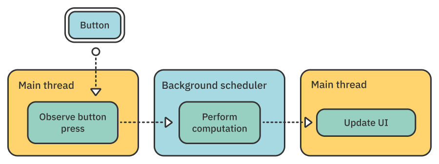
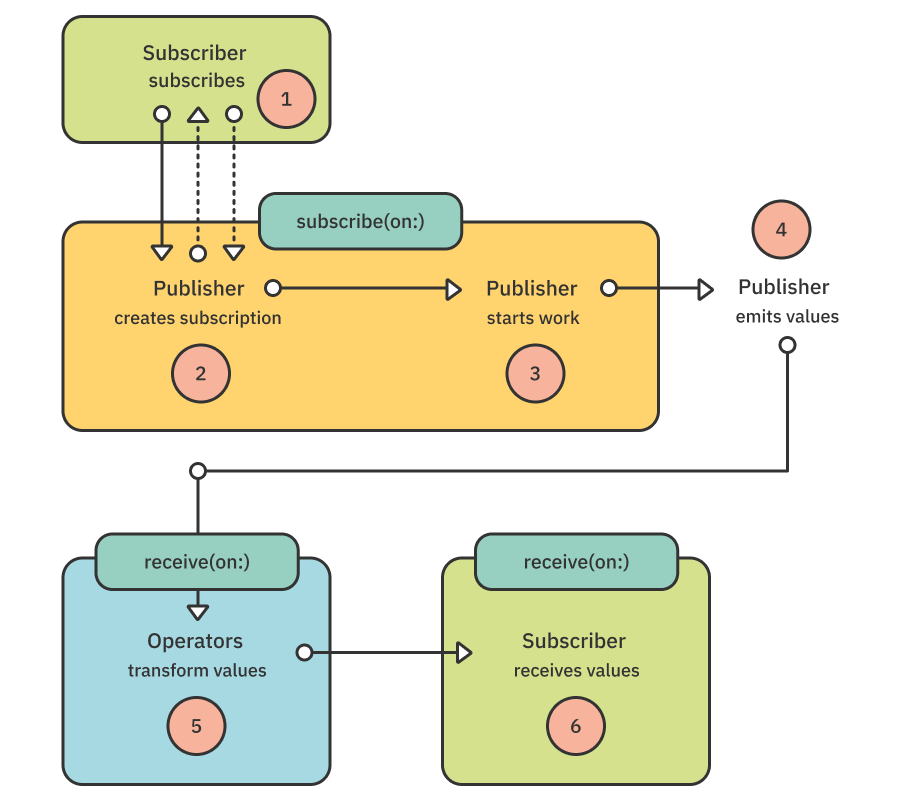
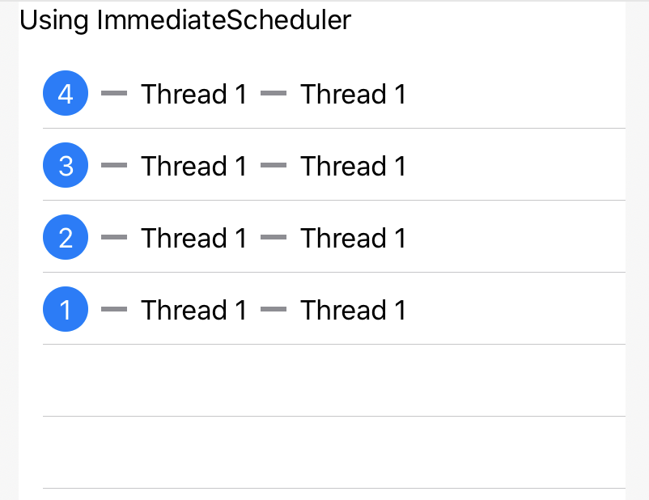
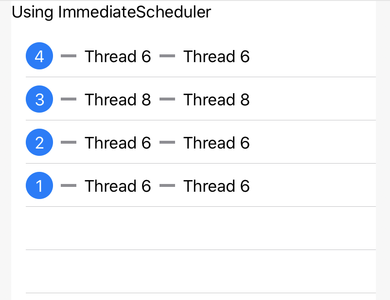
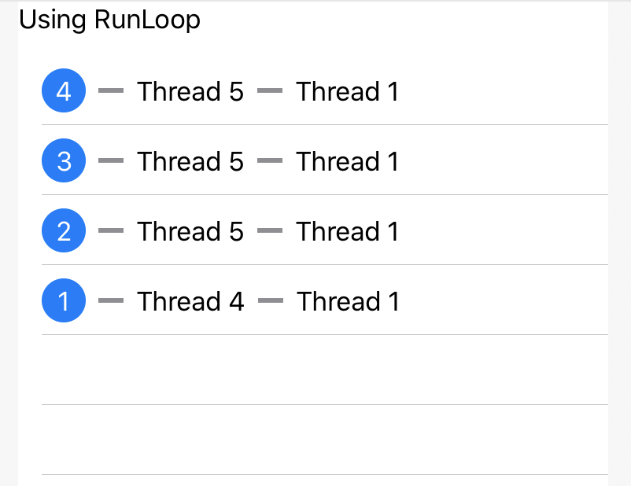
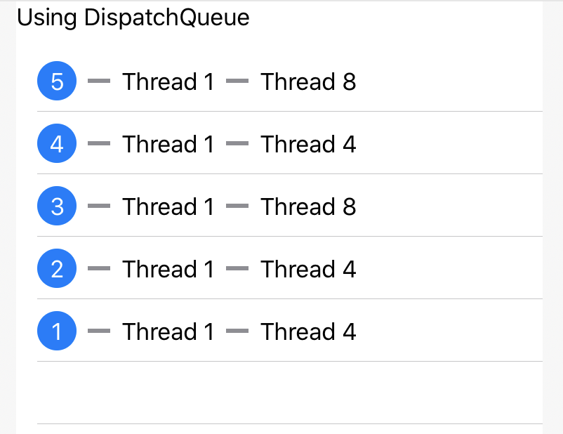

第17章：调度器¶
当您浏览这本书时，您已经阅读了这个或那个操作符以调度器为参数。大多数情况下，您只需使用DispatchQueue.main，因为它方便，理解良好，并带来令人放心的安全感。这是舒适区！
作为开发人员，您至少对DispatchQueue是什么有一个大致的了解。除了DispatchQueue.main，您肯定已经使用了一个全局并发队列，或者创建了一个串行调度队列来串行运行操作。如果你没有或不记得细节，不要担心。在本章中，您将重新评估有关派单队列的一些重要信息。
但是，为什么Combine需要一个新的类似概念？现在是时候深入了解组合调度器的真实本质、意义和目的了！
在这一章中，您将了解调度器概念出现的原因。您将探索Combine如何使异步事件和操作易于使用，当然，您将尝试Combine提供的所有调度程序。
调度器简介¶
根据苹果的文档，调度器是一种协议，它定义了何时以及如何执行闭包。虽然定义是正确的，但这只是故事的一部分。
调度器提供了尽快或将来执行未来操作的上下文。该操作是协议本身中定义的闭包。但术语闭包也可以隐藏Publisher在特定调度器上执行的某些值的交付。
您是否注意到这个定义故意避免提及线程？这是因为具体的实现是定义调度器协议提供的“上下文”执行位置的实现！
因此，您的代码将执行哪个线程的确切细节取决于您选择的调度程序。
请记住这个重要概念：调度器不等于线程。在本章后面，您将详细了解这对每个调度器意味着什么。
让我们从事件流的角度来看待调度器的概念：

您在上图中看到的内容：
- 用户操作（按键）发生在主（
UI）线程上。 - 它触发了一些在后台调度器上处理的工作。
- 要显示的最终数据将交付给主线程上的订阅者，因此订阅者可以更新应用程序的用户界面。
你可以看到调度器的概念是如何深深植根于前景/背景执行的概念的。此外，根据您选择的实现，工作可以序列化或并行化。
因此，要充分了解调度器，您需要查看哪些类符合Scheduler协议。
但首先，您需要了解与调度器相关的两个重要操作符！
Note
在下一节中，您将主要使用符合Combine的Scheduler协议的DispatchQueue。
调度器的操作符¶
Combine框架为两个基本操作符提供了与调度员合作：
subscribe(on:)和subscribe(on:options:)在指定的调度器上创建订阅（开始工作）。receive(on:)和receive(on:options:)在指定的调度器上交付值。
此外，以下运算符将调度器和调度器选项作为参数。您在第6章“时间操作操作符：”中了解了它们：
debounce(for:scheduler:options:)delay(for:tolerance:scheduler:options:)measureInterval(using:options:)throttle(for:scheduler:latest:)timeout(_:scheduler:options:customError:)
如果您需要刷新这些操作符的记忆，请随时回顾第6章。然后你可以看看两个新的。
介绍subscribe(on:)¶
请记住——在您订阅之前，发布者是一个无生命的实体。但是，当您订阅发布者时会发生什么？进行了几个步骤：

Publisher接收订阅者并创建Subscription。Subscriber从发布者那里接收订阅和请求值（虚线）。Publisher开始工作（通过Subscription）。Publisher发出值（通过Subscription）。- 运算符转换值。
Subscriber接收最终值。
当您的代码订阅发布者时，步骤1、2和3通常发生在当前线程上。但是，当您使用subscribe(on:)运算符时，所有这些操作都会在您指定的调度器上运行。
Note
当查看receive(on:)运算符时，您将回到此图表。然后，您将了解底部的两个框，其中步骤标记为5和6。
您可能希望发布者在后台执行一些昂贵的计算，以避免阻止主线程。简单的方法是使用subscribe(on:)
是时候举个例子了！
在项目文件夹中打开Starter.playground，然后选择subscribeOn-receiveOn页面。确保显示调试区域，然后首先添加以下代码：
// 1
let computationPublisher = Publishers.ExpensiveComputation(duration: 3)
// 2
let queue = DispatchQueue(label: "serial queue")
// 3
let currentThread = Thread.current.number
print("Start computation publisher on thread \(currentThread)")
以下是上述代码的细分：
- 该
Playground在Sources/Computation.swift中定义了一个名为ExpensiveComputation的特殊发布者，该发布者模拟了在指定持续时间后发出字符串的长期运行计算。 - 您将用于在特定调度器上触发计算的串行队列。如上所述，
DispatchQueue符合Scheduler协议。 - 您可以获取当前执行线程号。在
Playground中，主线程（线程编号1）是代码运行的默认线程。Thread类number扩展在Sources/Thread.swift中定义。
Note
如何实现ExpensiveComputation发布者的细节目前无关紧要。您将在下一章“自定义发布者和处理背压”中了解有关创建自己的发布者的更多信息。
返回subscribeOn-receiveOn playground页面，您需要订阅computationPublisher并显示它发出的值：
let subscription = computationPublisher
.sink { value in
let thread = Thread.current.number
print("Received computation result on thread \(thread): '\(value)'")
}
执行Playground并查看输出：
Start computation publisher on thread 1
ExpensiveComputation subscriber received on thread 1
Beginning expensive computation on thread 1
Completed expensive computation on thread 1
Received computation result on thread 1 'Computation complete'
让我们深入研究各个步骤，以了解会发生什么：
- 您的代码正在主线程上运行。从那里，它订阅了计算发布者。
ExpensiveComputation发布者接收订阅者。- 它创建一个订阅，然后开始工作。
- 当工作完成后，发布者通过订阅交付结果并完成。
你可以看到，所有这些都发生在主线程1上。
现在，更改发布者订阅以插入subscribe(on:)调用：
let subscription = computationPublisher
.subscribe(on: queue)
.sink { value in...
再次执行Playground以查看类似于以下内容的输出：
Start computation publisher on thread 1
ExpensiveComputation subscriber received on thread 5
Beginning expensive computation from thread 5
Completed expensive computation on thread 5
Received computation result on thread 5 'Computation complete'
啊！这是不同的！现在，您可以看到您仍在从主线程订阅，但将委托合并到您提供的队列中，以有效地执行订阅。队列在其一个线程上运行代码。由于计算在线程5上开始和完成，然后从此线程发出结果值，因此您的接收器也会收到此线程上的值。
Note
由于DispatchQueue的动态线程管理性质，您可能会在此日志中看到不同的线程编号，并在本章中看到进一步的日志。重要的是一致性：相同的线程编号应该在相同的步骤中显示。
但是，如果您想更新一些屏幕上的信息呢？您需要在水槽关闭中执行DispatchQueue.main.async { ... }等操作，以确保您正在从主线程执行UI更新。
使用Combine有更有效的方法可以做到这一点！
介绍receive(on:)¶
您想知道的第二个重要操作符是receive(on:)它允许您指定应该使用哪个调度器向订阅者交付值。但这是什么意思？
在订阅的接收器之前插入一个receive(on:)的呼叫：
let subscription = computationPublisher
.subscribe(on: queue)
.receive(on: DispatchQueue.main)
.sink { value in
然后，再次执行Playground。现在您会看到以下输出：
Start computation publisher on thread 1
ExpensiveComputation subscriber received on thread 4
Beginning expensive computation from thread 4
Completed expensive computation on thread 4
Received computation result on thread 1 'Computation complete'
Note
您可能会在与后续两个步骤不同的线程上看到第二条消息（“昂贵的计算订阅者已收到...”）。由于Combine中的内部管道，此步骤和下一步可能会在同一个队列上异步执行。由于Dispatch动态管理自己的线程池，您可能会看到此行和下一行的不同线程编号，但您不会看到thread 1
成功！即使计算工作正常，并从后台线程发出结果，您现在仍然可以保证始终在主队列上接收值。这是安全执行UI更新所需的。
在本调度操作符简介中，您使用了DispatchQueue。Combine扩展了它以实现Scheduler协议，但它不是唯一一个！是时候深入了解调度器了！
调度器实现¶
Apple提供了若干具体的Scheduler协议实现：
ImmediateScheduler：一个简单的调度器，立即在当前线程上执行代码，这是默认执行上下文，除非使用subscribe(on:) receive(on:)或以调度器为参数的任何其他运算符进行修改。RunLoop：绑定到Foundation的Thread对象。DispatchQueue：可以是串行的，也可以是并发的。OperationQueue：一个规范工作项执行的队列。
在本章的其余部分，您将回顾所有这些及其具体细节。
Note
这里一个明显的遗漏是缺少TestScheduler，这是任何被动编程框架测试部分不可或缺的一部分。如果没有这样的虚拟模拟调度器，彻底测试您的组合代码具有挑战性。您将在第19章“测试”中探索有关这种特定调度器的更多详细信息。
立即调度器¶
调度器类别中最简单的条目也是Combine框架提供的最简单的条目：ImmediateScheduler。这个名字已经破坏了细节，所以看看它的作用！
打开Playground的ImmediateScheduler页面。您不需要此操作的调试区域，但请确保实时视图可见。如果您不确定如何做到这一点，请参阅第6章“时间操作操作符”的开头。
您将使用这个Playground内置的一些花哨的新工具，在调度器上遵循您的发布者价值观！
首先创建一个简单的计时器，就像您在前几章中所做的那样：
let source = Timer
.publish(every: 1.0, on: .main, in: .common)
.autoconnect()
.scan(0) { counter, _ in counter + 1 }
接下来，准备一个创建发布者的闭包。您将使用Sources/Record.swift: recordThread(using:)中定义的自定义运算符。该运算符记录操作符看到值通过时的当前线程，并且可以多次从发布源记录到最终接收器。
Note
此recordThread(using:)运算符仅用于测试目的，因为运算符将数据类型更改为内部值类型。其实施的细节超出了本章的范围，但冒险的读者可能会发现它很有趣。
添加以下代码：
// 1
let setupPublisher = { recorder in
source
// 2
.recordThread(using: recorder)
// 3
.receive(on: ImmediateScheduler.shared)
// 4
.recordThread(using: recorder)
// 5
.eraseToAnyPublisher()
}
// 6
let view = ThreadRecorderView(title: "Using ImmediateScheduler", setup: setupPublisher)
PlaygroundPage.current.liveView = UIHostingController(rootView: view)
在上述代码中，您：
- 准备返回发布者的闭包，使用给定的
recorder对象通过recordThread(using:)设置当前线程记录。 - 在这个阶段，计时器会发出一个值，因此您可以记录当前线程。你能猜到是哪一个吗？
- 确保发布者在共享的
ImmediateScheduler上提供值。 - 记录您现在使用哪个线程。
- 闭包必须返回
AnyPublisher类型。这主要是为了方便内部实施。 - 准备并实例化一个
ThreadRecorderView，它显示发布的值在不同记录点的线程之间的迁移。
执行Playground页面，并在几秒钟后查看输出：

此表示形式显示源发布者（计时器）发出的每个值。在每行上，您都会看到值正在经历的线程。每次添加recordThread(using:)运算符时，您都会看到行上记录的其他线程号。
在这里，您会看到，在您添加的两个记录点，当前线程是主线程。这是因为ImmediateScheduler立即在当前线程上“调度”。
为了验证这一点，你可以做一个小实验！返回您的setupPublisher闭包定义，并在第一行recordThread行之前插入以下内容：
.receive(on: DispatchQueue.global())
此请求将源发出的值进一步提供给全局并发队列。这会产生有趣的结果吗？执行Playground以了解：

这完全不同！你能猜到为什么线程一直在变化吗？您将在本章的DispatchQueue报道中了解更多信息！
立即调度程序选项¶
由于大多数运算符在其参数中接受Scheduler，您还可以找到接受SchedulerOptions值的options参数。 在 ImmediateScheduler 的情况下，此类型被定义为 Never，因此在使用 ImmediateScheduler 时，您永远不应该为操作符的 options 参数传递值。
立即调度器陷阱¶
ImmediateScheduler的一个具体之处是，它是即时的。您将无法使用Scheduler协议的任何schedule(after:)变体，因为您需要指定延迟的SchedulerTimeType没有公共初始化器，并且对立即调度毫无意义。
您将在本章中学习的第二种Scheduler存在类似但不同的陷阱：RunLoop。
RunLoop调度程序¶
长期的iOS和macOS开发人员熟悉RunLoop。在DispatchQueue之前，这是一种在线程级别管理输入源的方法，包括在主（UI）线程中。您的应用程序的主线程仍然有一个关联的RunLoop。您还可以通过从当前线程调用RunLoop.current为任何基础Thread获取一个。
Note
现在 RunLoop 是一个不太有用的类，因为 DispatchQueue 在大多数情况下是一个明智的选择。 这就是说，仍有一些特定情况下运行循环很有用。 例如，Timer 将自己安排在 RunLoop 上。 UIKit和AppKit依靠 RunLoop 及其执行模式来处理各种用户输入情况。 描述关于 RunLoop 的所有内容超出了本书的范围。
要查看RunLoop，请在Playground中打开RunLoop页面。 你之前使用的Timer源码是一样的，所以已经为你写好了。 在其后添加此代码：
let setupPublisher = { recorder in
source
// 1
.receive(on: DispatchQueue.global())
.recordThread(using: recorder)
// 2
.receive(on: RunLoop.current)
.recordThread(using: recorder)
.eraseToAnyPublisher()
}
let view = ThreadRecorderView(title: "Using RunLoop", setup: setupPublisher)
PlaygroundPage.current.liveView = UIHostingController(rootView: view)
- 像之前所做的那样，您首先使值通过全局并发队列。为什么？因为它很有趣！
- 然后，您要求在
RunLoop.current上接收值。
但什么是RunLoop.current？它是与调用时当前线程关联的RunLoop。ThreadRecorderView正在调用闭包，从主线程设置发布者和记录器。因此，RunLoop.current是主线程的RunLoop。
执行Playground，看看会发生什么：

根据您的要求，第一个recordThread显示每个值都经过全局并发队列的一个线程，然后在主线程上继续。
一点理解挑战¶
如果您第一次使用subscribe(on: DispatchQueue.global())而不是receive(on:)会发生什么？试试看！
你看，一切都记录在线程一上。起初可能并不明显，但它完全合乎逻辑。是的，发布者在并发队列中订阅了。但请记住，您正在使用一个Timer，该计时器正在主RunLoop上发出其值！因此，无论您选择订阅此发布者的调度器是什么，值都将始终在主线程上开始他们的旅程。
使用RunLoop安排代码执行¶
Scheduler允许您安排尽快执行的代码，或在未来日期之后执行。虽然无法将后一种形式与ImmediateScheduler一起使用，但RunLoop完全能够延迟执行。
每个调度器实现都定义了自己的SchedulerTimeType。在你弄清楚要使用哪种类型的数据之前，把握起来有点复杂。在RunLoop的情况下，SchedulerTimeType值是一个Date。
您将安排一个操作，在几秒钟后取消ThreadRecorderView的订阅。事实证明，ThreadRecorder类有一个可选的Cancellable，可用于停止订阅发布者。
首先，您需要一个变量来保存对ThreadRecorder的引用。在页面开头，添加以下一行：
var threadRecorder: ThreadRecorder? = nil
现在，您需要捕获线程记录器实例。做到这一点的最佳地点是在这些setupPublisher关闭上。但如何呢？您可以：
- 向闭包添加显式类型，分配
threadRecorder变量并返回发布者。您需要添加显式类型，因为糟糕的Swift编译器会抱怨“可能无法推断复杂的闭包返回类型”。 - 使用一些操作符在订阅时捕获录音机。
狂野起来，做后者！
在eraseToAnyPublisher()之前，在您的setupPublisher闭包中添加此行：
.handleEvents(receiveSubscription: { _ in threadRecorder = recorder })
捕捉录音机的有趣选择！
Note
您已经在第10章“调试”中了解了 handleEvents。它具有很长的签名，允许您在发布者生命周期的不同点执行代码（在被动编程术语中，这被称为注入副作用），而无需实际与它发出的值交互。在这种情况下，您正在拦截录音机订阅发布者的时刻，以便在全局变量中捕获记录器。不漂亮，但它以一种有趣的方式完成了工作！
现在，您都准备好了，可以在几秒钟后安排一些操作。在页面末尾添加此代码：
RunLoop.current.schedule(
after: .init(Date(timeIntervalSinceNow: 4.5)),
tolerance: .milliseconds(500)) {
threadRecorder?.subscription?.cancel()
}
此schedule(after:tolerance:)允许您安排何时提供的闭包应与可容忍漂移一起执行，以防系统无法在选定时间精确执行代码。您将当前日期添加4.5秒，以便在执行前发送四个值。
跑完Playground。您可以看到列表在第四个项目之后停止更新。这是您的取消机制！
Note
如果您只获得三个值，这可能意味着您的Mac运行速度有点慢，无法容纳半秒的公差，因此您可以尝试将日期增加，例如，settimeIntervaleSinceNow设置为5.0，tolerance为1.0。
RunLoop选项¶
与ImmediateScheduler一样，RunLoop不为采用SchedulerOptions参数的调用提供任何合适的选项。
RunLoop陷阱¶
RunLoop的使用应仅限于主线程的运行循环，以及根据需要，您控制的基础线程中可用的RunLoop。也就是说，您自己使用Thread对象启动的任何内容。
要避免的一个特殊陷阱是在DispatchQueue上执行的代码中使用RunLoop.current。 这是因为 DispatchQueue 线程可能是短暂的，这使得它们几乎不可能被 RunLoop 依赖。
您现在准备好了解最通用和最有用的调度程序：DispatchQueue！
调度队列调度程序¶
在本章和前几章中，您一直在各种情况下使用DispatchQueue。DispatchQueue符合Scheduler协议，并且完全可用于所有以Scheduler为参数的操作符。
但首先，快速复习调度队列。调度框架是Foundation的一个强大组件，允许您通过将工作提交到系统管理的调度队列，在多核硬件上同时执行代码。
DispatchQueue可以是串行的（默认的）或并发的。串行队列按顺序执行您提供给它的所有工作项。并发队列将并行启动多个工作项，以最大限度地提高CPU使用率。两种队列类型都有不同的用法：
- 串行队列通常用于保证某些操作不会重叠。因此，如果所有操作都在同一队列中进行，他们可以在不锁定的情况下使用共享资源。
- 并发队列将同时执行尽可能多的操作。因此，它更适合纯计算。
队列和线程¶
您一直使用的最熟悉的队列是DispatchQueue.main。它直接映射到主（UI）线程，在此队列上执行的所有操作都可以自由更新用户界面。用户界面更新仅允许从主线程进行。
所有其他队列，无论是串行还是并发队列，都在系统管理的线程池中执行其代码。这意味着您永远不应该对在队列中运行的代码中的当前线程做出任何假设。特别是，由于DispatchQueue管理其线程的方式，您不应该使用RunLoop.current安排工作。
所有调度队列共享相同的线程池。您要执行的串行队列将使用该池中的任何可用线程。一个直接的后果是，来自同一队列的两个连续工作项可能会在继续按顺序执行时使用不同的线程。
这是一个重要的区别：当使用subscribe(on:) receive(on:)或任何其他使用Scheduler参数的运算符时，您绝不应假设每次都支持调度程序的线程是相同的。
使用DispatchQueue作为调度器¶
是时候让你做实验了！像往常一样，您将使用计时器发出值，并观看它们在调度器之间迁移。但这次，您将使用调度队列计时器创建计时器。
打开名为DispatchQueue的Playground页面。首先，您将创建几个队列来处理。将此代码添加到您的Playground：
let serialQueue = DispatchQueue(label: "Serial queue")
let sourceQueue = DispatchQueue.main
您将使用sourceQueue从计时器发布值，然后使用serialQueue尝试切换调度器。
现在添加此代码：
// 1
let source = PassthroughSubject<Void, Never>()
// 2
let subscription = sourceQueue.schedule(after: sourceQueue.now,
interval: .seconds(1)) {
source.send()
}
- 当计时器触发时，您将使用
Subject发出一个值。您不在乎实际的输出类型，所以您只需使用Void。 - 正如您在第11章
Timers中了解到的那样，队列完全能够生成计时器，但队列计时器没有Publisher API。这是API中令人惊讶的遗漏！您必须使用Schedulers协议中schedule()方法的重复变体。它立即开始并返回Cancellable。每次计时器触发时，您都会通过源主体发送一个Void值。
Note
您是否注意到您如何使用now属性来指定计时器的开始时间？这是Scheduler协议的一部分，并返回使用调度程序的SchedulerTimeType表示的当前时间。实现Scheduler协议的每个类都为此定义自己的类型。
现在，你可以开始练习调度器跳跃了。通过添加以下代码来设置您的发布者：
let setupPublisher = { recorder in
source
.recordThread(using: recorder)
.receive(on: serialQueue)
.recordThread(using: recorder)
.eraseToAnyPublisher()
}
这里没什么新鲜事，你在本章中多次编码类似的图案。
然后，如前例所示，设置显示器：
let view = ThreadRecorderView(title: "Using DispatchQueue",
setup: setupPublisher)
PlaygroundPage.current.liveView = UIHostingController(rootView: view)
执行Playground。很简单，你可以看到意图：

- 计时器在主队列上触发，并通过主体发送
Void值。 - 发布者在您的串行队列中接收值。
您是否注意到第二个 recordThread(using:) 在 receive(on:) 运算符之后如何记录当前线程中的变化？ 这是 DispatchQueue 如何不保证每个工作项在哪个线程上执行的完美示例。 在 receive(on:) 的情况下，工作项是从当前调度程序跳到另一个调度程序的值。
现在，如果您从串行队列中发出值并保持相同的receive(on:)运算符，会发生什么？值还会在旅途中改变线程吗？
试试看！返回代码的开头，并将sourceQueue定义更改为：
let sourceQueue = serialQueue
现在，再次执行Playground：
有趣！您再次看到DispatchQueue的无线程保证效果，但您也看到receive(on:)运算符从不切换线程！看起来内部正在进行一些优化，以避免额外的切换。你将在本章的挑战中探索这一点！
DispatchQueue选项¶
DispatchQueue是唯一提供当运算符接受SchedulerOptions参数时可以传递的一组选项的调度器。这些选项主要围绕指定QoS（服务质量）值，独立于DispatchQueue上已经设置的值。工作项目有一些额外的旗帜，但在绝大多数情况下，你不需要它们。
要查看如何指定QoS，请将setupPublisher中的receive(on:options:)修改为以下内容：
.receive(
on: serialQueue,
options: DispatchQueue.SchedulerOptions(qos: .userInteractive)
)
您将DispatchQueue.SchedulerOptions的实例传递给指定最高服务质量的options：.userInteractive。它指示操作系统尽最大努力将交付价值优先于不太重要的任务。当您想尽快更新用户界面时，您可以使用此功能。相反，如果快速交货的压力较小，您可以使用.background服务质量。在本示例的上下文中，您不会看到真正的区别，因为它是唯一正在运行的任务。
在实际应用程序中使用这些选项有助于操作系统在您同时有多个队列繁忙的情况下决定首先安排哪个任务。它真的在微调你的应用程序性能！
你快用完调度器了！再坚持一点。你还有最后一个调度器要学习。
操作队列¶
您在本章中学习的最后一位调度器是OperationQueue。该文档将其描述为一个规范操作执行的队列。这是一个丰富的监管机制，允许您创建具有依赖项的高级操作。但在Combine的背景下，您不会使用这些机制。
由于OperationQueue在引擎盖下使用Dispatch，因此使用其中一个表面没有什么区别。还是有？
用一个简单的例子试试看。打开OperationQueue Playground页面并开始编码：
let queue = OperationQueue()
let subscription = (1...10).publisher
.receive(on: queue)
.sink { value in
print("Received \(value)")
}
您正在创建一个简单的发布者，在1到10之间发出数字，确保值到达您创建的OperationQueue中。然后，您将值打印到sink中。
你能猜到会发生什么吗？展开调试区域并执行Playground：
Received 4
Received 3
Received 2
Received 7
Received 5
Received 10
Received 6
Received 9
Received 1
Received 8
这令人费解！物品按顺序发出，但到达时顺序不正常！这怎么可能？要了解情况，您可以更改print以显示当前线程号：
print("Received \(value) on thread \(Thread.current.number)")
再次执行Playground：
Received 1 on thread 5
Received 2 on thread 4
Received 4 on thread 7
Received 7 on thread 8
Received 6 on thread 9
Received 10 on thread 10
Received 5 on thread 11
Received 9 on thread 12
Received 3 on thread 13
Received 8 on thread 14
啊哈！如您所见，每个值都在不同的线程上接收！如果您查找有关OperationQueue的文档，则有一个关于线程的注释，其中指出OperationQueue使用Dispatch框架（因此是DispatchQueue）执行操作。这意味着它不能保证它将为每个交付的值使用相同的底层线程。
此外，每个 OperationQueue 中都有一个参数可以解释一切：它是 maxConcurrentOperationCount。 它默认为系统定义的数字，允许操作队列同时执行大量操作。 由于您的发布者几乎在同一时间发出所有项目，因此它们被Dispatch的并发队列分派到多个线程！
对您的代码稍作修改。定义queue后，添加以下行：
queue.maxConcurrentOperationCount = 1
然后运行页面并查看调试区域：
Received 1 on thread 3
Received 2 on thread 3
Received 3 on thread 3
Received 4 on thread 3
Received 5 on thread 4
Received 6 on thread 3
Received 7 on thread 3
Received 8 on thread 3
Received 9 on thread 3
Received 10 on thread 3
这一次，您将获得真正的顺序执行——将maxConcurrentOperationCount设置为1相当于使用串行队列——并且您的值按顺序到达。
操作队列选项¶
OperationQueue没有可用的SchedulerOptions。它实际上是类型别名到RunLoop.SchedulerOptions，它本身没有提供任何选项。
操作队列陷阱¶
您刚刚看到OperationQueue默认同时执行操作。您需要非常清楚这一点，因为它可能会给您带来麻烦：默认情况下，OperationQueue的行为类似于并发DispatchQueue。
然而，当你每次发布者发出价值时都有大量工作要做时，它可能是一个很好的工具。您可以通过调整maxConcurrentOperationCount参数来控制负载。
挑战¶
唷，这是一个漫长而复杂的章节！ 恭喜你成功了！ 有一些脑力可以应对几个挑战吗？ 我们开始做吧！
挑战1：停止计时器¶
这是一个简单的。在本章关于DispatchQueue的部分中，您创建了一个可取消的计时器，为您的源发布者提供值。
设计两种不同的方法，在4秒后停止计时器。提示：您需要使用DispatchQueue.SchedulerTimeType.advanced(by:)
找到解决方案了吗？将它们与projects/challenge/challenge1/final playground中的比较：
- 使用串行队列的调度器协议
schedule(after:_:)方法来安排取消subscription的闭包的执行。 - 使用
serialQueue的正常asyncAfter(_:_:)方法（预组合）来做同样的事情。
挑战2：发现优化¶
在本章的前面，您读到了一个有趣的问题：当您连续receive(on:)呼叫中使用相同的调度器时，Combine是优化的，还是调度框架优化？
要找出答案，您需要转身进行挑战2。你的挑战是设计一种能为这个问题带来答案的方法。这并不复杂，但也不是微不足道的。
你能找到一个解决方案吗？继续阅读以比较你的！
在Dispatch框架中，DispatchQueue的初始化器采用可选target参数。它允许您指定一个要执行代码的队列。换句话说，您创建的队列只是一个阴影，而代码执行的真实队列是目标队列。
因此，试图猜测Combine还是Dispatch正在执行优化的想法是使用两个不同的队列，其中一个针对另一个。因此，在调度框架级别，代码都在同一队列上执行，但（希望）Combine没有注意到。
因此，如果您这样做，并看到同一线程上收到的所有值，那么调度很可能正在为您执行优化。您为解决方案编写代码的步骤是：
- 创建第二个串行队列，针对第一个队列。
- 为第二个串行队列添加
.receive(on:)以及.recordThread步骤。
完整的解决方案可在projects/challenge/challenge2/final playground中找到。
关键点¶
Scheduler定义了一件作品的执行上下文。Apple的操作系统提供了多种工具，可帮助您安排代码执行。- 将这些调度器与
Scheduler协议相结合，以帮助您在任何给定情况下为工作选择最好的调度器。 - 每次您使用
receive(on:)发布者中的进一步运算符都会在指定的调度器上执行。也就是说，除非他们自己使用Scheduler参数！
接下来去哪？¶
你学到了很多东西，你的大脑一定被所有这些信息融化了！下一章更加复杂，因为它教你如何创建自己的发布者和处理背压。确保您现在安排一个当之无愧的休息时间，并在下一章中刷新！